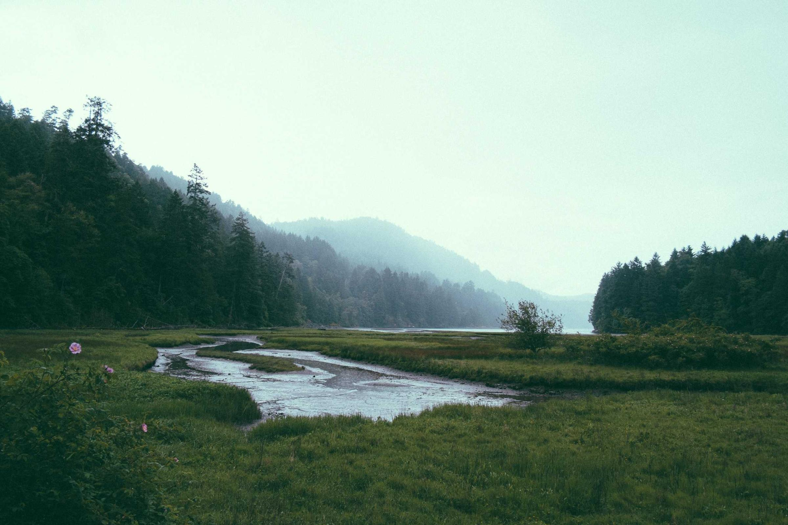

Image too big
to upload?
Max file size 2 MB
photo.jpg · 4.8 MB
Upload it to shrink it?
Sign up to download
PinchCompress, convert, upscale
44% lighter.
Same photo.
A preset for
every place.
A whole folder.
One ZIP.
Too small?
Upscale it 4×.

Original353 KB
WebP
WebP · quality 752400 × 1600
Encoding…
Saved 4 images as pinch-images.zip
Original160 × 160
AI detail640 × 640
Real-ESRGAN, running on your device
Pinch
Make images lighter.Keep them private.
PinchCompress, convert, upscale
Nothing is
uploaded.
- Uploads
- 0bytes
- Account
- None
- Daily limit
- None
- Price
- Free
- Licence
- MIT
Works offline once loaded
Try Pinch.
Free, in your browser.